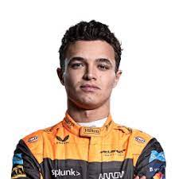
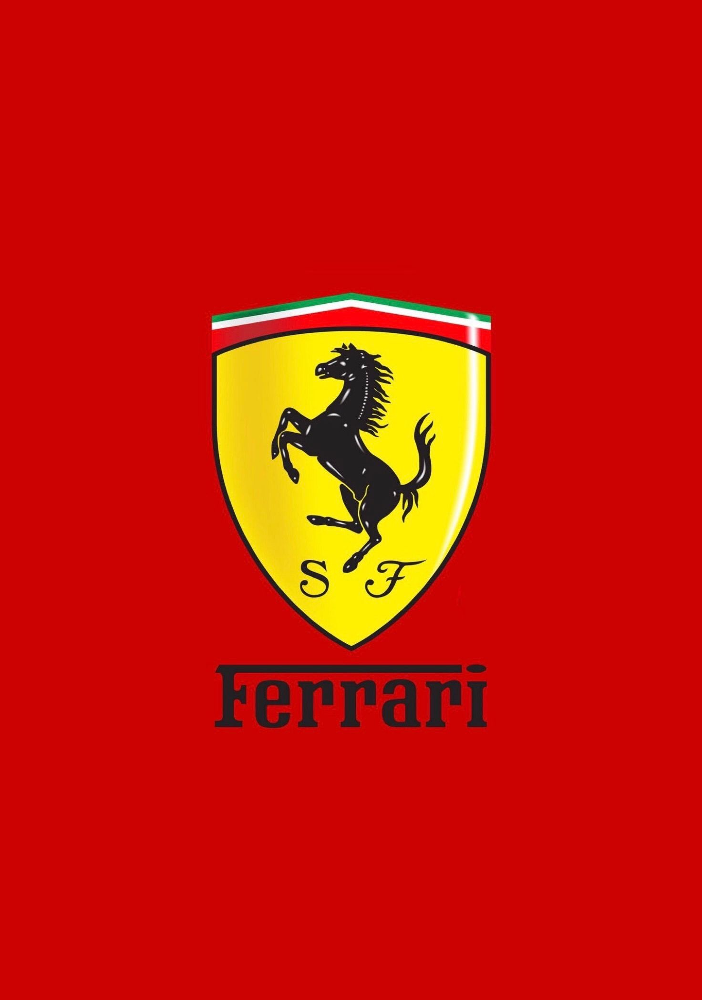

Mclaren
A McLaren Formula–1-es csapatot az új-zélandi Bruce McLaren alapította Bruce McLaren Motor Racing néven, saját maga versenyeztetésére. A csapat 1966-ban, a monacói nagydíjon debütált. Az alapító halála után Teddy Mayer vitte tovább az istállót, majd 1980 végén Ron Dennis vezetésével létrejött a McLaren International.
Sofőrök:

Lando
Norris
Daniel
Ricciardo



Ferrari
A Scuderia Ferrari olasz Formula–1-es versenycsapat, a sportág eddigi legsikeresebbje, a világbajnokság kezdete, 1950 óta jelen van a Formula–1-ben. Enzo Ferrari alapította 1929-ben, és 1939-ig az Alfa Romeo autóit versenyeztette. Csak később kezdtek saját autókat készíteni.
Sofőrök:
Charles
Lecrerc
Carlos
Sainz